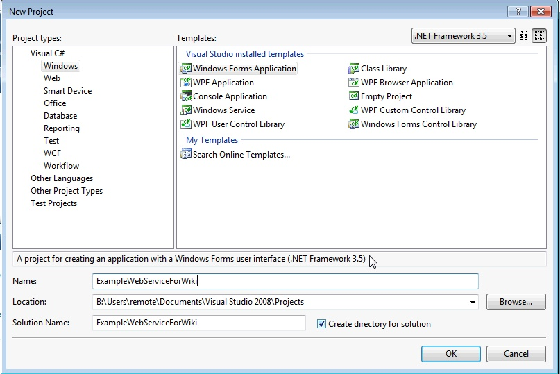
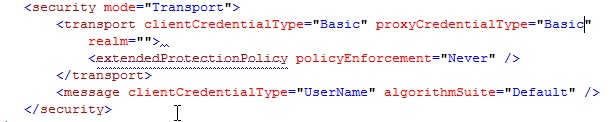
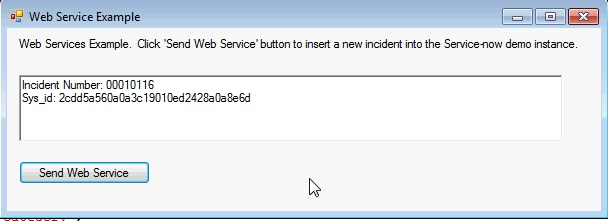

Web Services C Sharp .NET End to End Tutorial
| |
Note: This article applies to Fuji and earlier releases. For more current information, see Web Services C Sharp .NET End to End Tutorial at http://docs.servicenow.com
The ServiceNow Wiki is no longer being updated. Visit http://docs.servicenow.com for the latest product documentation. |
Contents
1 How to use .NET to consume a ServiceNow Web Service
This tutorial will show you how to configure ServiceNow correctly to receive a web service request from your .NET client, as well as how to consume our web services using C# .NET.
1.1 ServiceNow Configuration
To configure web services within ServiceNow, access the System Properties->Web Services module. This module displays the system properties that are specific to web services within your instance. For security reasons, you will want to make sure that you require basic authorization for incoming SOAP requests. This ensures that only authenticated users will be able to make any web services calls, whether it be via web service import sets or inserting/deleting/querying via direct web services.
{kind=link}
The next step is very important if you are using .NET as a client to connect to ServiceNow. You must set the elementFormDefault property to false. This property defines how the WSDLs are qualified. Of course, if you do not consume our WSDL and just create the XML manually, then this property is irrelevant in this case.
{kind=link}
1.2 Calling a Web Service in Visual Studio .NET
In this example, I will be using Visual Studio 2008. First, create a new Windows Form Application for this example 
{kind=link}
On the resulting form, I created a richTextBox (which I named 'richTextBoxResult') and a button (named buttonResult).
{kind=link}
From here, there are a couple of different ways to proceed. You can create a web reference, a service reference, or not use a .NET framework at all. I will do an example of both a web reference and a service reference.
1.2.1 Using a Service Reference
Go to the Solutions Explorer and select Service References->Add Service Reference. A wizard will appear asking for an address. Use: https://<instance name>.service-now.com/incident.do?WSDL. Accept the defaults for the rest of the wizard.
Open the app.config file and change the Security mode to "Transport" and the clientCredentialType and proxyCredentialType to "Basic" 
{kind=link}
1.2.2 Using a Web Reference
Go to the Solutions Explorer and select Service References->Add Service Reference. A wizard will appear. At the bottom of the form, there is an Advanced button. Click on it and click on the "Add Web Reference" button at the bottom of the new wizard page. This will start the Web Reference wizard. For the URL, use: https://<instance name>.service-now.com/incident.do?WSDL and name the web reference, 'WebReference1'. Accept the defaults for the rest of the wizard.
1.2.3 The Source Code
Now we are ready to insert the code. Double-click on the "Send Web Service" button on your form to open the backend code to the form that has been created. Here is the code that I used to insert a record into the demo instance and to read the response.
using System;
using System.Collections.Generic;
using System.ComponentModel;
using System.Data;
using System.Drawing;
using System.Linq;
using System.Text;
using System.Windows.Forms;
namespace ExampleWebServiceForWiki
{
public partial class FormMain : Form
{
public FormMain()
{
InitializeComponent();
}
private void buttonSend_Click(object sender, EventArgs e)
{
/* SERVICE REFERENCE-SPECIFIC CODE
ServiceReference1.ServiceNowSoapClient soapClient = new ServiceReference1.ServiceNowSoapClient();
soapClient.ClientCredentials.UserName.UserName ="itil";
soapClient.ClientCredentials.UserName.Password ="itil";
ServiceReference1.insert insert = new ExampleWebServiceForWiki.ServiceReference1.insert();
ServiceReference1.insertResponse response = new ExampleWebServiceForWiki.ServiceReference1.insertResponse();
// END OF SERVICE REFERENCE CODE */
// WEB REFERENCE-SPECIFIC CODE
WebReference1.ServiceNow_incident soapClient = new ExampleWebServiceForWiki.WebReference1.ServiceNow_incident();
System.Net.ICredentials cred = new System.Net.NetworkCredential("itil", "itil");
soapClient.Credentials = cred;
WebReference1.insert insert = new WebReference1.insert();
WebReference1.insertResponse response = new WebReference1.insertResponse();
// END OF WEB REFERENCE CODE
insert.category = "Category";
insert.comments = "Comments";
insert.short_description = "My short description";
try
{
response = soapClient.insert(insert);
this.richTextBoxResult.Text = "Incident Number: " + response.number + "\n";
this.richTextBoxResult.Text += "Sys_id: " + response.sys_id;
}
catch (Exception error)
{
this.richTextBoxResult.Text = error.Message;
}
}
}
}
1.3 Results
If you have followed this tutorial correctly, you should receive the following result whether you used a Service Reference or a Web Reference 
{kind=link}
1.4 Troubleshooting
I am receiving a null response from ServiceNow's web service
If you are receiving a "null" response from your web service in your client code, then you may have missed the step in this tutorial for setting the elementFormDefault setting to "False". Here is a quick video tutorial that shows you how to do this: The elementDefaultForm Setting - video walkthrough. Please remember to recompile your code against the WSDL after you have changed this setting and saved it.